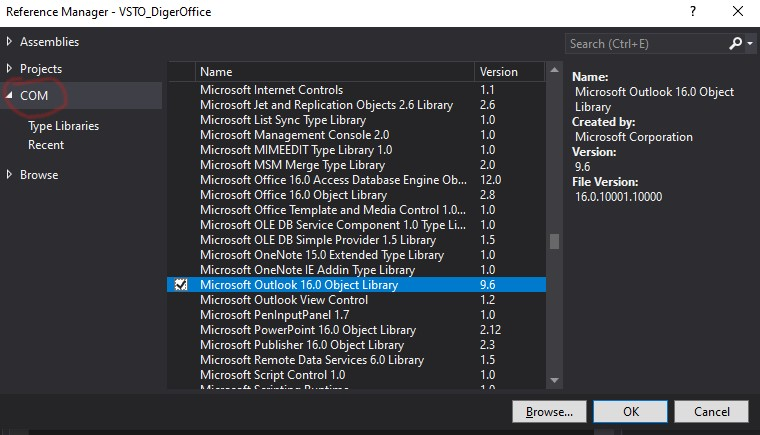
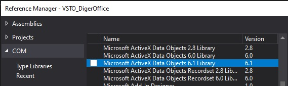
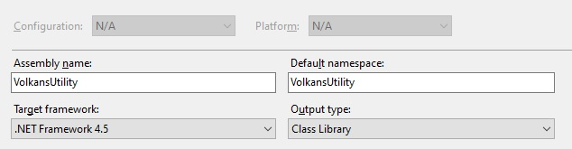

Genel Bilgiler
VSTO projelerinde diğer ofis uygulamalarıyla çalışmanın VBA'den çok büyük bi farkı yok. Burada da yine ilgili kütüphaneyi referans olarak ekleme işi var, sonra yine ilgili programın obje modeline erişme işi var. Sadece kullandığımız objelerin işi bittiğinde yok edilmesiyle ilgili olarak bir iki ufak detay var, onları göreceğiz.
Yine VBA'de dikkat ettiğimiz gibi, seçtiğiniz Office versiyonuna ait referansı içeren kodunuz, daha düşük bir Office versiyonu olan bir PC'de çalışacaksa, sizdeki versiyonda yeni gelmiş özellikleri kullanmadığınızdan emin olmanız gerekiyor. Ör: Slicerlar 2010'da geldi, Office 2007'si olan bir kişi bunu kullanırken hata alır. O yüzden böyle bir ihtimal varsa kodunuzda kullanıcının Office versiyon kontrolünü yaptırabilirsiniz.
Bu arada tabiki VSTO'da da yine Late Binding tekniğini kullanabilir ve versiyon probleminden kaçınabilirsiniz, ancak VBA'den hatırlayacağımız üzere Intellisense'den yararlanamayacağınız gibi performans kaybı da olacaktır. Late Binding, özellikle c# için biraz farklı olabilmekte. Bunun için şu, şu, şu ve şu linklere bakabilirsiniz
Bu arada çok ihtiyacınız olacağını sanmam ama olur da bir nedenle sizdeki office versiyonundan daha eski bir Office versiyonunda çalışacak bir add-in hazırlamanız gerekiyorsa ilgili versiyona ait PIA denen referenceleri indirmeniz gerekir. Olası bir neden şu olabilir: Intellisenseten faydalanmak istiyorsunuz, yani Late Binding yapmayacaksınız, ilgili kütüphaneyi referans olarak vereceksiniz. Ancak sizdeki Office versiyonu, add-ini kullanacak diğer kişilerden düşükse onlarda kodunuz hata alır. Böyle bir durumda PIA yöntemi işinizi görür. Bunları da buradan indirebilirsiniz.(Ama ben olsam, early binding ile hazırlar, intellisensin nimetlerinden yararlanır, sonra tüm kodumu Late Binding'e çeviririm, tabi performans sorunu olmayacaksa)
İşi biten nesnelerin yok edilmesi
.Net framework'te diğer office uygulamalarına ve içlerindeki nesnelere COM nesneleri denir. Bir COM nesnesi yaratılıp kullanıldıktan sonra işi bitince bellekten atılması için özel işlemlere tabi tutulur. VBA'deki gibi kısaca null atamak yeterli değildir.
Outlook, Word gibi Office uygulamalarını add-inimizde kullandıktan sonra onlara ait nesneleri bellekten silmemiz gerekiyor. Bunun için onlara sadece null atamak yeterli olmuyor, ayrıca onlara ait referansları serbest bırakmamız(releasing) gerekiyor. Bahsettiğim şey aşağıdaki linklerden bazısında bahsedilen RCW(Runtime Callable Wrapper) nesnesi ile ilgili. Bu RCW nesnesi, bizim COM nesnesinin etrafını saran başka bi nesnedir ve COM nesnesine her başvuru yaptığınızda bu RCW nesnesine ait olan referans sayısı 1 artar. Ve COM nesnesi ile işimiz bittiğinde RCW'ye yapılan tüm referansların sıfırlanması gerekir. Aksi halde bu RCW nesnesi serbest kalmadığı için ilgili COM nesnesine tekrar ulaşmaya çalıştığımızda hata alırız. Aşağıdaki örneklerden göreceğimiz üzere, bu nesne serbest kalmadığında ilgili office uygulaması Task Manager'da hala yaşıyor görünecektir.
Peki bu her zaman dikkat edilmesi gereken bir durum mudur? Aslında değil. Özellikle Excel'den Outlook'a ulaşırken çok sorun olacağını düşünmüyorum. Zira Outlook'umuz genelde açıktır, yani bellekte ayrı bir Outlook nesnesi yaratmak yerine açık olana başvururuz. Zaten maillerimizin gitmesi için Outlook açık da olmalı, aksi halde maillerimiz outbox'ta kalacaktır, biz de istediğimiz işlemi yapamamış olacağızdır. Ama yine de "Ben Outlook kapalıyken de bunu kullanacağım, mailler de outboxta kalırsa kalsın, mailin acil gitmesi gerekmiyor, veya ben sadece mail gönderimi için Outlook'a erişmiyorum, calendar işlemleri gibi işler de yapıyorum v.s" diyorsanız da buradaki yöntemleri kullanabilirsiniz. Evet burda özellikle bahsedilen Office uyguılamasının kapalı olduğu durumdaki sıkıntıdan bahsediyoruz. Bu uygulamaların açık olması ise onları release etmek gibi bir derdimizin olmaması anlamına gelir.
Fakat, diğer Office uygulamalarında bu endişe devam eder. Yani Word ile çalışırken bu işlemleri mutlaka yapmalısınız. Veya bir Outlook add-in'i yapıp oradan Excel'e ulaştığınızda Excel nesneleri için bu adımları işletmeniz gerekir.
Bir diğer sıkıntı olmayacak durum, 3rd parti uygulamaları kullanarak işlemleri yapabiliyor olduğumuz zamanlardır. Mesela yine Outlook'ta bir add-in yaptık diyelim; Excel'e bilgi yazacağız, bunun için Interop'a gerek yok. ClosedXML ile release derdi olmadan işlerimizi halledebiliriz.
Ama ille de Interop kullandığınızda bu aşamaları geçmeniz lazım. Göreceksiniz ki çok farklı yöntemler/öneriler var. Biraz aşağıdaki linklerde verilen çözüm önerilerinin hepsini inceleyip denedim. Buna göre farklı caselerde farklı davranışlar söz konusudur, hepsini de göreceğiz.
Yöntemler
Two Dot prensibi ve kodla ulaşılamayan ara nesneler
Yöntemlere geçmeden önce bi prensip hakkında bilgi edinelim. Bu prensip şunu der: Bir nesneyi kullanırken onu dolaylı olarak kullanmayın, ona ait değişkeni de mutlaka yaratıp öyle kullanın. Mesela bir A nesnesinin A1Prop propertysini kullandığımızda A1 nesnesini elde ediyoruz, A1 nesnesinin de A1aProp propertysini kullanarak da A1a nesnesi yaratabiliyoruz diyelim. Bu prensibe göre yapmamamız gereken kötü şeyler ve yapmamız gereken iyi şeyler şöyle:
//kötü yöntem
var A= new A();
var A1a=A.A1Prop.A1aProp; //*Açıklama için aşağı bakın
//Doğru yöntem
var A= new A();
var A1= A.A1Prop;
var A1a = A1.A1aProp;
*Açıklama: işte tam burada iki nokta(two dot) kullanılıyor. Bu noktada hem A1Prop nesnesi hem de A1aProp nesnesi olmak üzere iki COM nesnesi yaratılıyor. Bu iki nesne için de ayrı ayrı 3er tane nesne yaratılmış oluyor. Birisi bildiğimiz .Net nesnesi(A1Prop ve A1aProp), birisi bunların referans aldığı RCW nesnesi(buna biz kod sırasında dokunamayız), bir diğeri de bunların referans aldığı COM nesneleri(bunlara da kodumuzda dokunamayız)
Şimdi nesneleri yarattık, kullandık ve artık işimiz bitti diyelim. İşi biten nesnelerden kurtulmak için 3 temel yöntem var.
- Release yöntemleri. Bu yöntemlerin başarılı olabilmesi için two dot prensibine uygun hareket edilmesi gerekmektedir
- Garbage Collector(GC)'ı çağırmak(release modda işe yarar, debug modda manuel kill lazım). Two dot prensibine gerek duyulmuyor.
- İlgili office uygulamasını öldürmek(Task manager'daki Outlook.exe, word.exe prosesini sonlandırmak): Biz buna hiç değinmeyeceğiz bile, çünkü bu yöntem ne şık ne de verimli.
Release Yöntemi
Hem debug hem release modda işe yarar. (İki release ifadesi birbirine karışmasın. Release yöntemi derken nesneyi serbest bırakma, bellekten atma anlamında kullanıyoruz; release mod derken ise VS'nun release modu yani projenizi yaygınlaştırma modunu kastediyoruz).
- Bu yöntemde, ilk olarak nesnemize referansta bulunan tüm referanslar özel bir metod(System.Runtime.InteropServices içinde Marshal.ReleaseComObject) ile yok edilir. Aksi halde ilgili nesne hala arka planda yaşamaya devam eder, ta ki Garbage Collector alıp onu yok edene kadar, sonra da null(Vb.Net'te Nothing) ataması yapılır.
- En alt nesneden başlayarak yukarıya doğru sırayla önce release etme ve nesne değişkenlerine null atama
- En son Applicatio'ndan çıkma(Quit) ve buna ait nesneyi release edip null yapma.
Bu yöntemde ise 3 farklı alt yöntem bulunuyor.
Tek release: ilgili nesne bi kere release edilir. Genelde bu yeterlidir, bu metod aslında o nesneye olan başvuruların sayısını bir azaltıyor. Çoğu yerde birden fazla referans olması durumundan bahsedilmiş ama ben bunu simüle edemedim, aynı nesneden ikinci defa yarattım, o nesnenin bir metodundan bir başka nesne yarattım, o nesneyi iki ayrı List'e ekledim, her defasında tek release yeterli oldu.
Loop release: Birden fazla referans varsa, bu kullanılır deniyor, ama dediğim gibi buna hiç gerek olmadı
FinalRelease: Sonradan gelen bi metod, loop release yerine bu da kullanılır ama başka bir add-in de kullanıyorsanız ve ilgili diğer com nesnelerine bu add-inler de ulaşıyorsa sıkıntı olur deniyor.
GC Yöntemi
Bu, sadece release modda çalışır, debug modda etkisini göremezsiniz. Collect ve WaitForPendingFinalizers metodlarını çağırırız. Yanlız bunları iki kere yapıyoruz, akabinde ilgili ofis uygulamasından çıkıyoruz(Quit metodu)
Hangisi tercih edilmeli?
Aşağıdaki kaynaklara bakıldığında kimi diyor ki, finalrelease kullanmayın; kimi diyor hiç release etmeyin, GC kullanmak yeterli, sadece bunu debug modda denemeyin; kimsi de GC'yi hiç önermiyor. Tam deli işi. O kadar delice ki, birinin en güvenilir dediğine diğer kaynak çok tehlikeli diyebiliyor ve bunu her iki taraf da diyor. O yüzden üşenmedim hepsini denedim. Şimdi benim testlerime bakalım, sonra sonuçları görelim.
Benim testlerim
oMail'e(mail nesnesi) tek referans varken: Her iki yöntem de işi yaradı. Ancak sadece oApp'i release etmek yeterli değil, her halükarda oMail de release edilmeli, yoksa bunun üzerinden hala oApp'e erişim kalıyor.
oMail için iki referans:
- Sadece release ile: Gerçekten de yaşamaya devam etti, hala bi referans var.
- Finalrelaese omail:tek omailde yapınca yine işe yaramadı, zira recipient hem outmaile hem oappe referansta bulunuyor, oAppte de finalrelease yapmak lazım.
- Finalrelease oAppte de yapınca:yine olmadı, çünkü two dot kuralını ihlal ettim,
- Looplu ReleaseCom: yine olmadı, çünkü two dot ihlali var
- Release modda GC:OK
-
Two dot kuralını uygulayınca:
- Finalrelease omail+oapp: olmadı
- Finelreasle receivers, receiver, oMail ve oApp : oldu
- Looplu release receivers, receiver, oMail ve oApp : oldu
- GC ok, ama two dot ile satır sayısını artırmaya gerek yok
Test kodlarının hepsini buraya koymaya gerek görmedim, sadece bir başarılı olan bir de başarısız olanı koyuyorum. Diğerlerine örnek dosyadan bakabilirsiniz.
UYARI: Testin anlamlı olabilmesi için Outlook'umuzun kapalı olmasını tekrar hatırlatmak isterim
private void btnTekRelease_Click(object sender, RibbonControlEventArgs e)
{
///Tek release yapıyoruz. Two dot prensibine uyuyoruz. Birden fazla referans bulunmadığı için sıkıntı yaşamıyoruz
try
{
outlook.Application oApp;
outlook.MailItem oMail;
Outlooktip ot;
if (Process.GetProcessesByName("OUTLOOK").Count() > 0)
{
ot = Outlooktip.Varolan;
oApp = (outlook.Application)Marshal.GetActiveObject("Outlook.Application");
}
else
{
ot = Outlooktip.Yeni;
oApp = new outlook.Application();
}
oMail = oApp.CreateItem(outlook.OlItemType.olMailItem);
//two dot prensibini ihlal etmeden iki ayrı değişken oluşturuyoruz
outlook.Recipients receivers = oMail.Recipients;
outlook.Recipient receiver = receivers.Add("volkan.yurtseven@hotmail.com");
receiver.Type = (int)outlook.OlMailRecipientType.olCC;
oMail.To = "mvolkanyurtseven@gmail.com";
oMail.Subject = "VSTO-Tek Release";
oMail.Body = "Bu bir deneme mailidir";
oMail.Send();
System.Windows.Forms.MessageBox.Show("İşlem tamam");
//Releasing objects
Marshal.ReleaseComObject(receiver);
receiver = null;
Marshal.ReleaseComObject(receivers);
receivers = null;
Marshal.ReleaseComObject(oMail);
oMail = null;
if (ot == Outlooktip.Varolan)
{
//Burda program açık kalmalı, o yüzden Quit metodu yok. Marshal.Release de yapmıyoruz,zira program hala açık
oApp = null;
}
else
{
oApp.Quit();
Marshal.ReleaseComObject(oApp);
oApp = null;
}
}
catch (Exception ex)
{
System.Windows.Forms.MessageBox.Show(ex.Message);
}
}
Two dot prensibini ihlal ettiğimiz kod ise şöyle
private void btnTwoDotIhlal_Click(object sender, RibbonControlEventArgs e)
{
///two dot prensibini ihlal edeceğiz, LoopRelease ile yapacağız ama FinalRelease ile yapsaydık da değişmeyecekti, çünkü two dot ihlali iki yöntemi de affetmiyor. o yüzden hala arkada yaşamaya davem edecek
try
{
outlook.Application oApp;
outlook.MailItem oMail;
Outlooktip ot;
if (Process.GetProcessesByName("OUTLOOK").Count() > 0)
{
ot = Outlooktip.Varolan;
oApp = (outlook.Application)Marshal.GetActiveObject("Outlook.Application");
}
else
{
ot = Outlooktip.Yeni;
oApp = new outlook.Application();
}
oMail = oApp.CreateItem(outlook.OlItemType.olMailItem);
outlook.Recipient receiver = oMail.Recipients.Add("volkan.yurtseven@hotmail.com"); //two dot
receiver.Type = (int)outlook.OlMailRecipientType.olCC;
var act = oMail.Actions;//omail için başka bi referans
oMail.To = "mvolkanyurtseven@gmail.com";
oMail.Subject = "VSTO-Release ama two dot ihlali";
oMail.Body = "Bu bir deneme mailidir";
oMail.Send();
System.Windows.Forms.MessageBox.Show("İşlem tamam");
//Releasing objects
ReleaseWithOrder(act, "receiver");
ReleaseWithOrder(receiver, "receiver");
ReleaseWithOrder(oMail, "oMail");
if (ot == Outlooktip.Varolan)
{
oApp = null;
}
else
{
oApp.Quit();
ReleaseWithOrder(oApp, "oApp");
oApp = null;
}
}
catch (Exception ex)
{
System.Windows.Forms.MessageBox.Show(ex.Message);
}
}
Bu kodda geçen RelesaseWithOrder isimli yardımcı fonksiyonun koda da şöyle:
private void ReleaseWithOrder(object o,string ad)
{
try
{
//while (Marshal.ReleaseComObject(o)>0) { }; //normalde bu satır yeterli, ben test amaçlı aşağıdaki bloğu oluşturdum
int cnt = Marshal.ReleaseComObject(o);
while (cnt > 0)
{
//buraya hiç girmedi, o yüzden çoklu referans durumunu hiç simüle edememiş oldum. Bu durumda ilk yöntemle bu yöntem arasında fark bulunmuyor
Trace.WriteLine(ad + " nesnesi için " + cnt.ToString() + ". release");
cnt =Marshal.ReleaseComObject(o);
}
}
catch
{
//
}
finally
{
o = null;
}
}
NOT: Hepsinin başlarında "sıkıntı yaşamıyoruz" derken kastım kodun ilk çalışmasından değil, sonraki çalıştırmaları kastediyorum, zira zaten ilk çalıştırmada problem olmaz, önemli olan sonraki çalıştırmalarda arkada yaşamaya devam ediyor mu, onu tespit etmek.
Tabi bu arada sorunsuz çalışan yöntemlerde task managerdan gözlemekmek lazım, hemen gitmiyor, 2-3 sn gitmesini bekleyin, ondan sonra deneyin.
Sonuç
Örnek doysyayı da incelediyseniz, göreceğiniz gibi FinalRelease, looplu release yerine rahatlıklık kullanılabilir. Sadece başka add-inler de devredeyse o zaman sıkıntı çıkarabilir. O zaman looplu release en güvenilir olanı. Bunda da zincirleme çok nesne varsa her biri için çok satır yazmak gerekiyor, pek şık değil.
Bence en pratik yöntem, two dot uygulamadan(satır sayısı artıramaya gerek yok) release modda GC yapmak.
Release metodları hem çok satır alıyor, hem büyük projelerde gözden kaçan bir ara nesne varsa(two dot nedeniyle) onu bulmak çok vakit alabilir.
Özetle GC candır.
Two dots prensibini de unutun gitsin, ama araştırdığınız kod örneklerinde görebilirsiniz diye buraya dahil ettim.
Çeşitli linkler
Konuyla ilgili birçok kaynak var. Benim bu yukarıda anlattıklarım genel olarak yeterli olmakla birlikte daha teknik detayları öğrenmek isteyenler bu linklere bakabilir. Ama yukarıda belirttiğim gibi bunlar kafanızı çok da karıştırabilir, zira birinin dediği ile diğerininki tutmayabiliyor.
Öncelikle şunu belirteyim. .Net'in mail göndermeyle alakalı System.Net.Mail isimli bir namespace'i var. Mail işlemleri genelde bununla yapılır. Ancak olur da bir şekilde(Ör:BT politikalarının izin vermemesi) bu namespace'i kullanmak yerine Outlook kullanmanız gerekirse, veya Outlook folderlarına, calendar'a v.s erişmeniz gerekiyorsa o zaman mecburen Outlook kütüphanesiyle çalışmak gerekecek.
Referans ekleme
Early binding yapacağız, o yüzden referans ekleriz.

Bunu eklediğimizde stdole'den bi tane daha ekliyor, onu silelim.
Kodları yukarıda gördüğümüz için ayrıca burada gerek görmüyorum. Sadece yukarıda detaylı bahsetmediğimiz bir iki yer var, onları açıklayalım.
Öncelikle ulaştığımız Office uygulamasının o anda açık olup olmadığını kontrol ediyoruz. Bunun için bi enumaration yarattım, istersek string bir "Yeni"/"Varolan" parametresi de gönderebilirdik, ama enum yaratmak daha havalı.
private enum Outlooktip
{
Varolan,
Yeni
}
Bunu da aşağıdaki gibi kullanıyoruz. O anda açık bir Outlook uygulaması olup olmadığını Process.GetProcessesByName("OUTLOOK").Count()>0 kodu ile sorguluyoruz. Evetse yine Marshall sınıfının GetActiveObject metodu ile bunu oApp nesnemize atıyoruz. Eğer Outlook o an açık değilse bellekte yeni bir Outlook nesnesi yaratıyoruz.
if (Process.GetProcessesByName("OUTLOOK").Count() > 0)
{
ot = Outlooktip.Varolan;
oApp = (outlook.Application)Marshal.GetActiveObject("Outlook.Application");
}
else
{
ot = Outlooktip.Yeni;
oApp = new outlook.Application();
}
Aradaki diğer işlemleri da yaptıktan sonra Application nesnesini de bellekten atmamız gerekiyor, burada da yine Outlook'a erişim tipine göre ya sadece nesneyi null yapıyoruz(Varolan durumu) ya da uygulamadan da çıkış gerektiren diğer kodlar(Yeni durumu)
//ara kodlar
if (ot == Outlooktip.Varolan)
{
oApp = null;
}
else
{
//GC veya Release yöntemlerine göre uygun kodlar
}
Bunların dışında VBA'de gördüğümüz yöntemler aynen kullanılabilir.
VBA'de veritabanı işlemlerini anlatırken yaptığımız gibi burada da Access Object modeline girmeyeceğiz. O yüzden bir COM nesnesi yaratmış olmayacağız. Sadece Access'ten data nasıl çekilir, ona bakacağız.
ADO.Net
VBA'deyken DAO ve ADO kullanmıştık. Burada ise .Net dünyasıyla gelen ADO.Net kullanacağız. Ancak bir nedenle klasik ADO da kullanmak isteyebilirsiniz. Bunun için en geçerli sebep, Range nesnesine ait CopyFromRecordset metodunu ADO.Net ile kullanamıyoruz, zira ADO.Net'te böyle Recordset diye bi nesne yok. Onun yerine bir datatable yaratıp bir loop ile buradaki kayıtları yazdırıyoruz(Başka yöntemler de var, sonra bahsedieceğim). 'Ben yeni bir şey öğrenmek istemiyorum, zaten ADO'yu zor öğrendim' derseniz ve ADO kullanmak isterseniz References'te COM altından ekleyebilirsiniz.

Biz şimdi ADO.Net ile gidelim. Bunun için ayrı bir reference eklemeye gerek yok. System.Data altındaki namespaceleri kullanacağız. Access için OleDb kullanabiliriz. Using bloğuna bunu eklememiz yeterli. Ayrıca çekeceğimiz veriyi bir DataTable içinde tutacaksak System.Data namespaceini de projeye dahil ederiz
Bu arada veritabanı işlemleri için şöyle güzel bir bir kaynak var. Artık yayında değilse de küçük bir google araştırması ile güncel kaynaklara da ulaşabilirsiniz.
Başka bir Excel dosyasından veri okuma(Dosyayı açmadan)
ADO.Net ile
VBA'de de bunu yapmıştık. ADO yerine ADO.Net kullanarak da aynısını yapabiliriz. Yalnız burada 255 karakter sorunu vardır, buna dikkat edilmesi gerekir. Yani bir kolondaki ilk metin 255 karakterden az ise, bu kolon normal text gibi algılanır ve o kolondaki ondan sonraki tüm satırlar da text gibi düşünülür ve 255'ten uzun olan metinleri 255'te keser. İlk satır 255'ten büyükse bunların tipini memo(long string) olarak algılar, ama buna güvenemezsiniz. O yüzden bazı registry ayarları yapılması gerekiyor. Ben bu detayı buraya koymadım, isteyen araştırabilir. Size önerim şu: Eğer 3rd party paket yükleyerek projenizin boyutunu yükseltmek istemiyorsanız ve metinsel bilgilerin her zaman 255ten kısa olduğundan eminseniz bunu kullanın. Aksi halde bir alt başlıktaki çözümü kullanın.
Yukarıda demiştim ki Ado.Net içinde CopyReceodrset metodu yok, onun yerine loop yapıyoruz. Bu loop, biraz uzunca olabiliyor, özellikle başlıkları falan da alacaksak. Bir de bu çok sık kullanılabilecek bir kod, o yüzden bunu static bic class içine koyup ihtiyaç oldukça çağırmak en iyisi. Ve hatta bu fonksiyon başka birçok projede kullanılabilecek bir fonksiyon, o yüzden böyle sık kullanılacak kodlar için kendinize ait bir utility kütüphanesi yazmak çok daha mantıklı olabilir. Mesela benim de VolkansUtility diye böyle bir paketim var, githubdan indirebilirsiniz. Hala geliştirme aşamasında olduğunu söylemeliyim. (Siz de böyle bir paket yapacaksanız, projenin Output Type'ını Class Library olarak seçmeniz gerekiyor)

Aşağıdaki kodda ReadFromExcelIntoDTWithOledDB metodunun içini görmek için utility paketine göz atabilirsiniz.
private void btnExcelOledb_Click(object sender, RibbonControlEventArgs e)
{
//okuma
string file = @"E:\OneDrive\Uygulama Geliştirme\web sitelerim\Yeni Efendi\Ornek_dosyalar\pivotdata.xlsx";
DataTable dt = ExcelRW.ReadFromExcelIntoDTWithOledDB(file, "select Kalem, Sum(Rakam) from [Sheet1$] Group by Kalem");
//yazma
ExcelRW.WriteDataTableContentToActiveWBWithInterop(dt, ExcelRW.TargetLocation.ActiveCell);
}
3rd Party uygulamalar ile
Kendi paketleriniz yazmak yerine hazır paketleri da kullanabilirsiniz. Daha önce ClosedXML'i görmüştük. Burada datayı Excel'e yazma işi oldukça pratik. Adından da anlaşılacağı üzere bu paket ile kapalı dosyalarla işlem yapıyoruz. Interop ile yaparken açık dosyada işlem yapıyoruz. Daha önce diğer işlemleri gördüğümüz için ben şimdi sadece Excel'e yazma kısmından bahsedeceğim.
Veri okuma için de bi paket var. ClosedXML'i anlatırken ExcelDataReader paketinden en sonda bahsetmiştim. Şimdi bunla ilgili bi örnek yapalım. Her ne kadar bu paketler pratiklik sağlasa da bunları daha da pratik kullanmak için yine Utility paketime veri okumayla ilgili bir fonksiyon koydum. Bunu kullanalım. Detaya gerek Utility paketinden gerek geliştiricinin kendi sitesinden bakabilirsiniz.
Burada kullanıcıdan bi seçim yapmasını bekliyorum; kullanıcı 1 derse bunu sayfa numarası gibi algılayacağız, 2 derse Tarihsel Data sayfasına gideceğiz. Burda c#'ı yeni öğrenenler için iki güzel özellik var. İlk olarak, static sınıfımdaki metod dynamic tipte parametre alıyor, yani sayfa bilgisini index olarak da yani integer gönderebilirim, isim olarak da yani string de. Bir diğer özellik de varolan bir sınıfa kendimiz de metodlar yazabiliyoruz, bunlara extension metodları deniyor. Ben de mesela string sınıfı için ConvertIoInt sınıfını yazdım. string bir ifadeyi yazdıktan hemen sonra ConvertIoInt diyebiliyorum. Alternatifi, Convert.ToInt32 diye en başa yazmaktı, ki extension hali çok daha pratiktir.
private void btnExcelReader_Click(object sender, RibbonControlEventArgs e)
{
//okuma
string cevap = Interaction.InputBox("Seçim yapın:1,2");
string file = @"E:\OneDrive\Uygulama Geliştirme\web sitelerim\Yeni Efendi\Ornek_dosyalar\pivotdata.xlsx";
DataTable dt;
if (cevap == "1")
{
dt = ExcelRW.ReadFromExcelIntoDTWithExcelReader(file, cevap.ConvertIoInt()); //extension metod
}
else
{
dt = ExcelRW.ReadFromExcelIntoDTWithExcelReader(file, "Tarihsel Data", "Ürün='Ürün1'", new string[] { "Bölge Kodu", "Ay", "Aylık Gerç" });
}
//yazma
ExcelRW.WriteDataTableContentToActiveWBWithInterop(dt, ExcelRW.TargetLocation.ActiveCell);
}